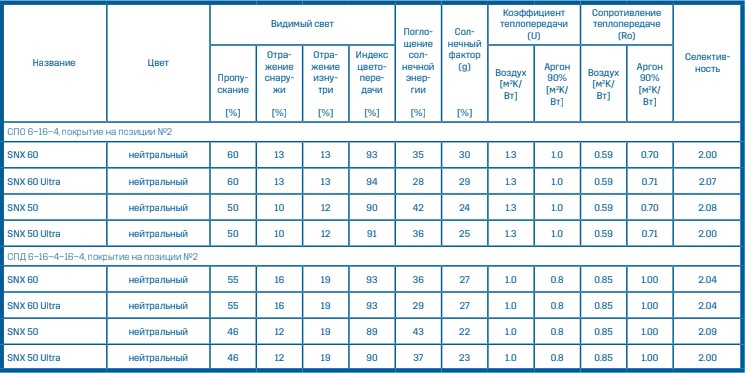
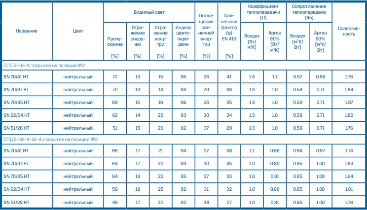
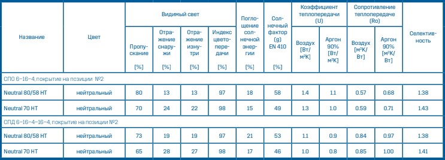
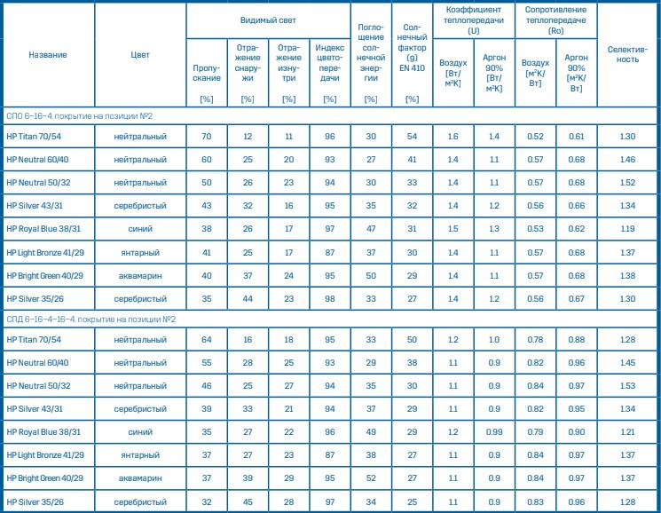
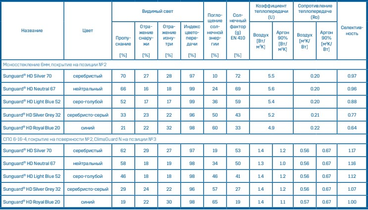

Материалы которые мы используем
Построим экологичный энергоэффективный дом А++ с панорамным остеклением по типовому или индивидуальному проекту под ключ.
Окна
Отличная теплоизоляция и защита от солнечных лучей. Стекла с вакуумно- магнетронным напылением от Guardian Glass позволят создать уникальный дизайн не забывая о великолепной функциональности
SNX — это новейшая разработка, которая сочетает в себе светопропускание и солнцезащиту. Максимально прозрачное экстраселективное стекло SunGuard SNX обладает отличными теплотехническими и солнцезащитными свойствами. Это стекло не только подчеркнёт внешний вид, но и заметно снизит затраты на отопление и кондиционирование помещения. Использование стекла SunGuard SNX — это ещё и дополнительные баллы для экологического сертификата по системам LEED или BREEAM.
SunGuard® SuperNeutralTM — это высокоселек- тивное стекл. Оно сочетает в себе одновременно высокий уровень защи- ты от солнца и высокую степень пропускания естественного дневного света.
SunGuard SN — идеальный вариант для создания стильных зданий, которые удивляют своим дизайном и радуют комфортом. Стекло нейтрального цвета с двойным напылением сере- бра выглядит завораживающе и цепляет глаз. Его установка помогает сократить расходы на энергопотребление благодаря тому, что уменьшает потребность в искусственном освещении и кондиционировании летом. Оптимально для стеклянных крыш и больших окон.
Стекло SunGuard Neutral HT нейтрального оттенка — это высочайший уровень пропускания света и надежная защита от солнца. Благодаря оптимально сбалансированным характеристикам стекло SunGuard Neutral HT помогает реже использовать искусственное освещение, снизить расходы на кондиционирование летом и на отопление — зимой.
В данный момент серия SunGuard Neutral HT с энергоэффективным напылением доступна в двух вариантах: SunGuard Neutral 80/58 HT и SunGuard Neutral 70 HT — закаливаемые версии с низкой и средней зеркальностью соответственно. Создавайте идеальные фасады с SunGuard Neutral HT — серией нейтральных стекол с высоким уровнем пропускания естественного света и эффективной защитой от солнца!
Performance — это стекла с мультифункци- ональным напылением, которое отражает лишнии солнечные лучи и сохраняют тепло в помещении, что помогает оптимизировать расходы на обогрев и кондиционирование. Стекло обладает оптимальным светопропусканием .
Серия продуктов SunGuard HP — это отличная цветовая палитра — от нейтрального до синего, бронзового.... Но несмотря на выбор цвета, изнутри стекло остается прозрачным. Богатый выбор цветовых решений, технологичные покрытия, уникальный дизайн. Эстетическая привлекательность SunGuard HP и его прозрачность изнутри плюс улучшенная теплоизоляция и солнцеза- щита — всё это позволяет применять данный продукт в самых разных климатических зонах.
SunGuard High Durable — это инновационный уровень солнцезащитных стекол с твердым покрыти- ем, наносимым методом вакуумного магнетронного напыления. Продукт обеспечивает оптимальные солнцезащитные и оптические характеристики, что является традиционным свойством стекол с данным видом покрытия. Однако стекла SunGuard HD отличает особая стойкость материала и высокая прочность напыления. Благодаря этому стекла данной серии можно смело применять в моноостеклении (устанавливая покрытием в сторону помещения).
К преимуществам новой серии относятся: повышенная механическая и химическая стойкость; возможность закалки и моллирования, а также ламинирования в случае, если это необходимо для повышения уровня безопасности, прочности и акустических характеристик; превосходные эстетические качества.
SunGuard HD — отличный выбор для остекления балконов и балюстрад, вентилируемых фасадов, стеклянных дверей, козырьков, перегородок и пр., для остекления непрозрачных зон и в качестве наружного стекла в двойных фасадах.
PIR панели
Универсальное решение для теплоизоляции жилого помещения, которые подойдет для любой комнаты.
Уникальная теплопроводность утеплителя 0,022 Вт/м°К Плиты PIR ТЕХНОНИКОЛЬ оберегают вашу квартиру от жаркого лета и холодной зимы за счёт отличной теплопроводности. Также с минимальным весом плит и наименьшей толщиной теплоизоляции, следует новым стандартам по снеговой нагрузке без усиления несущей конструкции.
Утеплитель LOGICPIR обладает рекордно низкой теплопроводностью (0,021 Вт/м*К) и максимально эргономичной обкладкой помещения, что дает эффект быстрого нагрева бани, а утеплитель защищает от утечки горячего воздуха и проникновения холодного. Если вы всегда хотели построить по настоящему современную баню, то вам понадобится надежное и долговечное решение.